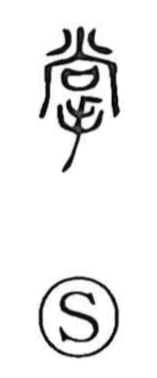

掌

Kun: tanagokoro, tsukasadoru | On: sho
palm (of the hand) ・ to manage ・ to be in charge ・ to control
Explanation
A phono-semantic graph, 掌 combines the hand/palm element with 尚 as its phonetic, which supplies the on-reading shō. The Shuowen glosses it as “the inside of the hand,” evoking the cupped hollow of the palm. Because the palm is the part that grips tightly, the character naturally extends to the idea of taking things firmly in hand: hence expressions such as 掌握 (to grasp, to command), 管掌 (to manage), and 掌典 (to take charge of rites or records). In early graphic usage, adding a small indicator above or below the palm sign produced 上 and 下, marking “above” and “below” with reference to the hand’s orientation.